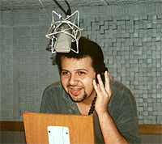
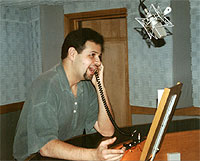
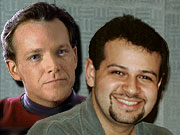

|
| Ricardo Juarez:
O Tom Paris brasileiro
 Juarez promete se esforar para manter intacto todo o sarcasmo e o bom humor do personagem. Leia a entrevista e saiba o que o ator, que tambm dubla o desenho animado Johnny Bravo, pensa de Jornada e do trabalho de dublar. |

|
Trek
Brasilis - Dublar Jornada nas Estrelas uma
grande responsabilidade. Dificilmente h telespectadores to
atentos e crticos quanto os fs do seriado e os roteiros so
to complicados e cheios de textos tcnicos que s vezes so
difceis de ser interpretados. Como voc encara essa
responsabilidade? Ricardo Juarez - Quando o assunto Jornada nas Estrelas, preciso ateno redobrada. Os textos de fico geralmente so mais complicados. Com a responsabilidade para fazer um bom trabalho, a dificuldade cresce bastante. TB - Voc conhecido como a voz de Johnny Bravo, um personagem de desenho animado. Qual a diferena entre dublar um desenho e um personagem de carne e osso? Qual dos dois voc prefere e qual deles mais fcil? Juarez - Gosto de dublar filmes e desenhos. Gosto de ambos por motivos diferentes. No desenho possvel desenvolver um trabalho mais solto, exercitar a "veia cmica". No caso dos filmes, como Voyager por exemplo, tenho que tomar mil cuidados para deixar o personagem "Paris" o mais natural possvel. O que, diga-se de passagem, no fcil. TB - Muitas vezes, uma dublagem pode melhorar ou piorar a performance dos atores vista na tela. Quanto do resultado final, aps uma dublagem, pode ser atribudo ao dublador e quanto ao ator? Juarez - Olha, concordo que existam dublagens boas e ruins, mas pra quem no acompanhou todo o processo, difcil dizer de quem foi a culpa pelo sucesso ou fracasso do filme ou desenho. s vezes o dublador bom, mas no fica bem naquele papel, tipo, a voz no combina com o personagem. s vezes a traduo, e algumas vezes a direo no orienta o dublador na hora de gravar. Um bom diretor pode fazer a diferena no final. Mas esse conceito de dublagem boa ou dublagem ruim termina sendo uma coisa pessoal. O que posso dizer que todos os profissionais envolvidos so altamente treinados e competentes, mesmo no agradando muitos. Essa a verdade nua e crua. TB - Dublagem normalmente um ponto de partida para atores de teatro e televiso. Voc tem alguma pretenso ou desenvolve alguma atividade nesse sentido? Juarez - Apesar de j ter feito alguma coisa de teatro, no tenho vontade de entrar de cabea nessa rea. Em termos de televiso, tenho vontade de fazer apresentao de vdeo. Atualmente curso jornalismo, quem sabe posso at tentar apresentar um telejornal... E existe uma possibilidade de eu tentar fazer cinema, minha paixo. A pouco tempo fiz parte do elenco de um curta-metragem, "Rodolfo o Medroso e o Temvel Monstro Dentro do Armrio". No elenco esto Joo Campelli (Rodolfo), Murillo Rosa (pai do Rodolfo) --esses dois tambm fazem novela, esto no elenco da novela das seis, "O Cravo e a Rosa", e, claro, eu ..o Monstro que mora dentro do Armrio (risos). Apesar do ttulo ter uma conotao infantil, o curta bem sombrio e "no" tem final feliz. TB - Como no caso dos atores, os dubladores tambm levam um tempo para entrar na "pele" dos personagens. Em funo disso, voc acha que a dublagem de uma srie permite uma qualidade de dublagem maior do que de um filme, em funo do maior volume de material a que o dublador submetido?  Juarez - Sim. Com certeza, numa srie, voc conhece melhor o ator e consegue pegar os trejeitos do personagem. O dublador no tem muito tempo pra entrar na pele do personagem, tudo acontece muito rpido em dublagem. A gente entra no estdio, assiste cena e logo em seguida j grava, no tem muito tempo para analisar a cara do personagem.TB - Voc j conhecia Jornada nas Estrelas antes de ser escalado para dublar Tom Paris? Juarez - J, sou f desde a Srie Clssica! TB - Nas equipes que dublam Jornada nas Estrelas na VTI Rio, h algum dos dubladores que trekker (f do seriado)? Juarez - Hummm, acho que s eu! Na verdade, eu curto muito a srie, mas no sei se me considero um trekker. Acho que sou mais um f... TB - Pelo que voc viu, o que achou do personagem que est dublando? Como o Tom Paris, visto pelo "Tom Paris Brasileiro"? Juarez - O Tom um cara muito simptico, brincalho... e sempre faz uma piadinha quando se sente desconfortvel com alguma situao. Ou seja, se der mole, ele solta uma piada... sacaneando (risos). difcil dubl-lo, tento estudar seu rosto, quando o olhar muda, uma sombrancelha levanta, ele faz aquele riso de canto de boca... um motivo pra uma interpretao, uma inflexo diferente. preciso ficar muito atento, porque se eu gravar de qualquer jeito, posso estragar uma dessas piadinhas que falei. Estou adorando fazer o Tom Paris. TB - Conte mais sobre o processo de dublagem. Como funciona esse trabalho, desde a entrega dos episdios VTI at o produto final chegar ao telespectador? Juarez - Quando o filme chega, ele traduzido, em seguida mandado para o diretor, que fica responsvel pelo esquema de dublagem, ou seja, ele marca o filme, escolhe os horrios em que cada dublador vai gravar, tudo isso tendo em vista que existe uma verba para fazer esse filme, e com "essa" verba, ele precisa fechar o filme... dentro de um prazo que dado pela empresa onde est sendo gravado. TB - Sabe-se que a Cristina Nastasi, uma das mais clebre trekkers brasileiras, cuida das tradues dos episdios para a VTI. Ela j sofreu vrias crticas no passado, tanto por erros de traduo, quanto pela traduo de termos como nomes de naves e outras coisas. Ela demonstrou alguma preocupao com essas crticas dos fs na produo das novas tradues? Juarez - Olha, a Cristina uma das pessoas que mais conhece o universo de Jornada na Estrelas. O lance da traduo s vezes levado para um lado pessoal. A verdade que, por melhor que seja o tradutor ou dublador, sempre existiro crticas. Sei que ela se dedica muito ao trabalho que faz e que tenta fazer o melhor possvel. Ela apaixonada por Jornada. TB - Jornada nas Estrelas uma srie que requer da VTI Rio um tipo de tradutor diferente: o tradutor "especializado". Isso muito comum? Voc acha que importante que o material de traduo seja feito por algum que tenha um conhecimento mais profundo do seriado? Juarez - Nem sempre uma srie ou filme tem um tradutor "especializado". No caso de Jornada, fora a Cristina, tem tambm a Anna Lusa e a Isabel, que tambm curtem a srie. Mas como j disse, no uma coisa comum... TB - Como a relao entre os dubladores em um estdio durante a gravao? E fora? H o mesmo tipo de "picuinhas" e concorrncia por determinados papis que se ouve falar nos estdios de televiso, teatro e cinema? Juarez - Olha, a concorrncia sempre vai existir, em todas as profisses. No caso da dublagem, no poderia ser diferente. A relao no estdio super tranqila, ningum "estrela". TB - Como so escolhidos os papis de um dublador? Juarez - Normalmente so feitos testes para os personagens ou ento a emissora indica as vozes que quer. TB - O que h de melhor na profisso de dublador? Juarez - Acho que o fato de, em um nico dia, poder viver vrios personagens... e no caso do Johnny Bravo, colocar um sorriso no rosto de muita gente. TB - O que h de pior na profisso? Juarez - Fora o salrio... o fato de sempre gravar correndo, s pressas. Muitas vezes a qualidade fica comprometida devido ao ritmo industrial. TB - Voc costuma ser reconhecido pelo pblico como a voz deste ou daquele personagem? Juarez - meio difcil... normalmente as pessoas falam: "Acho que conheo voc de algum lugar..." TB - Voc (ou algum do elenco de dublagem) estaria disposto a participar de uma conveno de Jornada nas Estrelas? Juarez - No sei quanto ao resto do elenco, mas eu adoraria participar de uma conveno. TB - Voc costuma assistir aos programas que dubla? Juarez - Sim, sempre que posso. Sou meio chato com meu prprio trabalho. Sempre que assisto, j fico imaginando mil maneiras de melhorar... sempre melhorar. Nunca me dou por satisfeito. Mas quando fao um trabalho, principalmente quando uma coisa que gosto, como Jornada nas Estrelas, me esforo muito para fazer um bom trabalho.  TB - Alguma mensagem especial aos trekkers brasileiros?Juarez - Bom, espero que gostem do meu trabalho, estou fazendo o mximo para deixar o "Paris" o mais natural possvel, sem fugir das caractersticas originais. TB - Alguma outra coisa que gostaria de mencionar? Juarez - See you around the galaxy! Paris out!
|